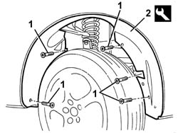

7055B91 Right front WHEEL ARCH LINER - R.R.
- Path
- Procedures > 70 FITTINGS > 7055 MOULDING AND PROTECTION > 7055B exterior protections > 7055B91 Right front WHEEL ARCH LINER - R.R.
- Kind
- repair procedure (removal / refitting; the operation number is the code)
- Applies to
- all engines; all production periods
- Interactive page
- https://sloeber94.github.io/elrnDB-a147/en/#/3025920
Applies to: all engines; all production periods
 Removing
Removing
 Refitting
Refitting7055B66 Engine compartment DUST SHIELD protection in right front wheel arch - R.R.
1. Undo the wheelarch bolts.
2. Using the special tool, detach the wheel arch and remove it.
 | Name | Country |
|---|---|---|
2 | Scraper blade | 1.823.014.000 |

Applies to: all engines; all production periods
Refitting
RemovingCheck that the wheelarch is undamaged.
Fit the additional wheelarch.
Tighten the screws.
7055B66 Engine compartment DUST SHIELD protection in right front wheel arch - R.R.
Topics linked from this page (1)
Topics that link to this page (33)
- 1008A46 cam shaft left rigid mount - r r
- 1008B10 power unit front mount (timing side) flexible block - replace
- 1016B10 single cylinder head extension - change gasket
- 1016C10 cylinder head - r + r and replace gasket
- 1020D14 front crank shaft oil seal cover - r + r and replace seals for versions with oil pump on crank shaft, timing side
- 1020D18 front crank shaft cover oil seal - replace
- 1028H10 connecting rod and piston set - r r
- 1032B10 toothed timing belt - r + r for timing adjustment or replacement
- 1032B46 toothed drive pulley - r + r
- 1032B52 toothed driven pulley (one) - r + r
- 1032C18 mobile timing system tensioner - r + r for 24 valve engines
- 1032C32 fixed timing system tensioner (one) r + r
- 1032D12 timing system protective cover(s) - r + r
- 1036H57 hydraulic tappets all r r
- 1036C10 camshafts in cylinder head extension - r r - includes cylinder head extension replacement if necessary
- 1036L30 front oil seal of intake camshaft in cylinder head extension replace
- 1060E10 pressure pump - r r
- 1060E30 pressure pump pulley - r r
- 1060E40 supplementary pressure pump - r r
- 1072B10 inlet manifold - r + r and replace seal
- 1080E20 active carbon filter for fuel vapours - r + r
- 1088C10 water pump - r + r
- 1092A10 Crankshaft services PULLEY - R.R.
- 1092G10 single engine belt r r
- 1092G14 engine component single belt mobile tensioner - r + r
- 1092G20 engine component single belt fixed tensioner - one - r + r
- 4130B20 power steering pump r r
- 4130B32 power steering pump mount - r r
- 4130B49 return pipe from power steering case to heat exchanger pipe r r
- 4130B54 return pipe from heat exchanger pipe to power steering fluid resevior r r
- 5040A20 air conditioner compressor - r+r - includes fluid level check and top up if necessary
- 5530A10 alternator - r+r
- 7055B42 Additional FRONT WHEEL ARCH (one), left or right - R.R.